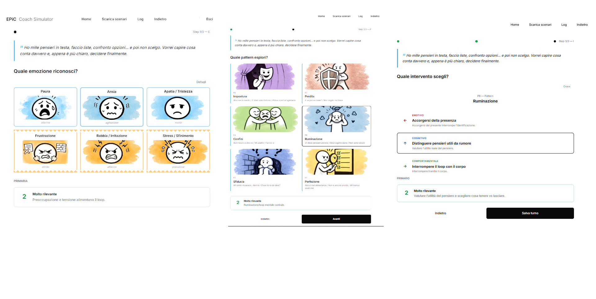
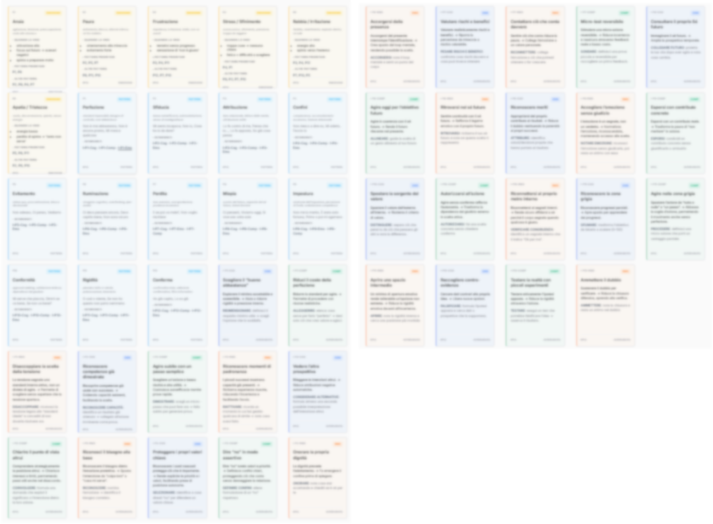

01
Hai ascoltato
Hai raccolto segnali, parole, contesto.
 COACH · TRAINER · MENTORE
COACH · TRAINER · MENTORE
BUSSOLA DECISIONALE
Riconoscere cosa alimenta il blocco e scegliere come intervenire
EPiC rende visibile la dinamica che alimenta la situazione e aiuta a scegliere l'intervento più utile.
IL PROBLEMA
A volte il problema non è capire
la situazione.
È capire dove entrare.
Hai raccolto segnali, parole, contesto.
Ma la lettura resta ancora troppo ampia.
E qui l’intervento può muovere o peggiorare.
LA PROVA


Stesso sintomo, interventi opposti.
Perché non sono uguali? Incontra i Pattern in forma di strampalati eroiIL MODELLO
Energia — Ciò che alimenta e orienta la situazione.
Pattern — La modalità ricorrente con cui la persona reagisce.
Intervento — La leva scelta per aprire una possibilità.
Comportamento — Il passo concreto che la persona può generare.
ora sai perché si chiama EPiC
EPiC aiuta a leggere ciò che
alimenta la situazione.
Da lì, l'intervento più utile diventa evidente.
EPiC IN AZIONE
Dalla lettura al movimento scelto dal cliente
EnergiaAnsia
PatternImpostura
InterventoRiconosci le evidenze.
Comportamento possibileSi candida.
EnergiaStress
PatternConfini
InterventoFormula una richiesta esplicita.
Comportamento possibileDichiara quale consegna può sostenere.
EnergiaPaura
PatternPerfezione
InterventoDefinisci “abbastanza buono”.
Comportamento possibilePubblica.
LA DIFFERENZA
Situazioni simili possono essere alimentate da Pattern diversi.
EPiC aiuta a distinguerli e a scegliere la leva più utile.
Non sostituisce l’esperienza: la rende più precisa e riproducibile.
STRUMENTI

Carte essenziali per leggere il Pattern, confrontare le leve e sostenere la scelta durante il lavoro in presenza.
Ordina il mazzo
Per allenare la lettura delle situazioni con scenari guidati e feedback immediato.
ApriPer partire da Energia e intento, attraversare i Pattern e arrivare alla Croce.
Apri
Per consultare Energie, Pattern e Interventi in un'unica vista.
ApriORIGINE
EPiC nasce da una domanda concreta: dove intervenire quando la situazione è chiara, ma il punto d’ingresso non lo è?
È il risultato di anni di lavoro con persone, team e professionisti, osservando come blocchi apparentemente simili possano essere alimentati da dinamiche diverse.
Da qui nasce un sistema per leggere ciò che alimenta la situazione, distinguere il Pattern e scegliere una leva utile.
Esplora EPiC